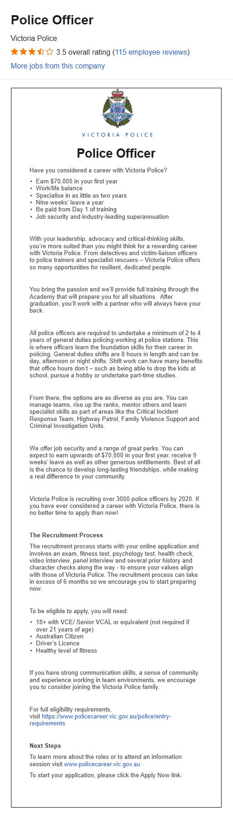

Ideal Job

• The job advertisement itself. Include a link, and a snapshot of it (in case the link
expires before the assignment deadline).
Finding an advertisement for my “ideal job” at this stage is rather difficult as it is not
advised for directly. I have a goal of joining the Victoria Police and then after my first
2-4 required years in the general duties roles specialising in an IT area.
I will however provide all the information I can including questions from their recruitment
and information sessions. I do have other backup career plans but this is my ideal job.
You can find a link to the advertisement
here or click on the snapped image to view it larger.
For their information on speciation from website “The majority of Victoria Police members
work as General Duties Police Officers across the state. However, there are also many
specialist roles available that require further training and a minimum of two to four years
of general duties operational experience as a pre-requisite.”
Talking with active members and recruiters almost anything can be covered by specialization
depending on police needs even if that is only as someone to coordinate with civilians.
• A description (in your own words) of the position, and particularly what makes this
position appealing to you.
I will focus on the specialization side relevant to this course and how I plan to use an IT
degree.
The position I’m aiming for does depend on the police needs at the time.
I can see some time within the next 10 years AI intergration with emergency services becoming
common
around the city. Watching out for things such as car accidents, people in distress,
aggressive behaviour or people under the major influence of drugs. Though the privacy concerns
will naturally place limits on what is allowed.
This will all need to be set up and monitored, and programming or algorithms adjusted to
alert nearby police at the correct time while avoiding too many false positives.
Other areas of work could be in data security for the police or in the field of crime
forensics where being able to understand a device like a computer in a car, let alone a full
powered computer in depth could be critical.
This position appeals to me as I would enjoy the mixture of action, problem solving,
challenge, and government work it would offer.
• A description of the skills, qualifications and experience required for the
position.
As you can see due to the unknown nature of what skills will be required a broad understand
of IT in general is the starting point, with Victoria Police likely to add on specialised
training as required.
Basics of many IT systems like data security, database’s for all the paperwork, networking,
how access control systems function, AI programming with ways of monitor video feeds, alert
systems to control responses effectively, and just a general idea of how most systems work
to build on as required.
Last a greater understand of how the policing system works, it’s challenges, and what it
needs for the future is also needed.
• A description (in your own words) of the skills, qualifications and experience you
currently have.
Right now I have a very broad understanding of a lot of areas but not enough in any field to
focus on.
I have some experience at the private level with security and monitoring systems as well as
a few of the challenges that go with it. I also know some of the human limitations of
interacting with and using security systems. In IT I have a basic understanding of many areas
but not enough to do anything beyond the basic tasks, it is however a good starting point
to build on.
• A plan describing how you will obtain the skills, qualifications and experience
required for the position, building on those you have now. This need not be greatly
detailed, (and will probably change significantly over time anyway), but try to be as
specific as you can.
Most of the experience for this will be possible on the job if I have the basic fundamentals and
the
proven
ability to learn effectively. I am in the middle of a police application and all going to plan
that will give me all the
required experience on how public policing functions.
For my planned specialisation I need to continue with this IT degree and take any chances to
learn more about relevant areas I listed above and take chances use them practically.
So long as I get into the police then in 3-5 years when I’m ready to specialise I should have my
IT
degree. Because of the uncertain nature of the role I will have to focus on learning a broad
range of areas and due to enjoying learning how everything works that suits me fine.
{kind=link}